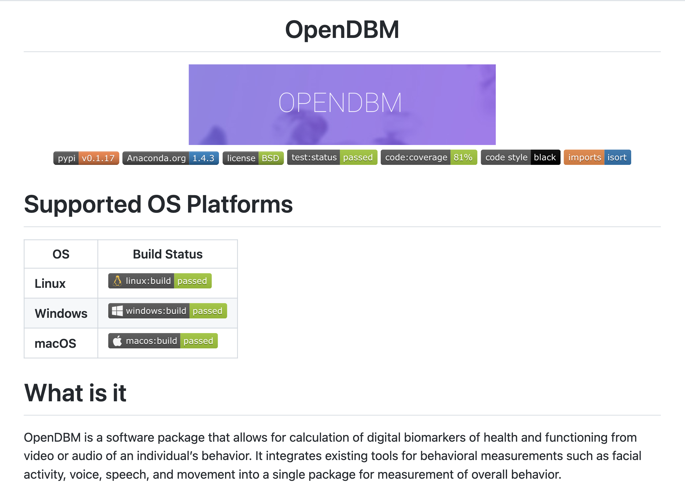
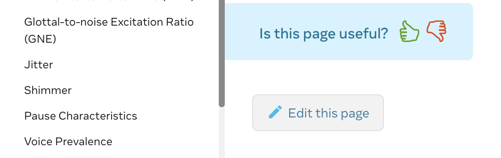

As book is the gate to knowledge, OpenDBM documentation is the gate to all the great features provided in this library! The OpenDBM team primary focus is how to make this library easily accessible, installable and usable in a very simple and straightforward as much as possible, and good documentation is the key to our objectives.
OpenDBM Github documentationWe want our github documentation as concise as possible. In here you can find the important information such as: * The latest OpenDBM version in PyPI * Unit test results which are coming from OpenDBM Code Checking Github Actions pipeline * The code coverage that also produced by above process
Along with those informations, you can also see the OS build and test status on our documentation which produced from OpenDBM Build Checking Github Actions pipeline. This way you can check whether the last version of OpenDBM library can support which platforms
We also provide a section how to install and use OpenDBM library inside our github page. But of course more detailed explanation are provided in OpenDBM Web documentation which you're probably looking right now
We are using DocToc in order to generate our table of contents. So dont change the table of content at all. If you want to add anything, just add it like a normal way, and you can use ## My Section if you feel need to add new section for your information. After that, just generate doctoc . in the root folder and DocToc will generate the ToC immediately and include your new information seamlessly.
By good probability when you read this section, you're currently looking at our web documentation. (Unless you read this from our github blob files which is still normal, no worries!)
We are using Docusaurus to generate this documentation as our primary objective is focus on the content and how to deliver the most straightfoward information to the community. So all the neccessary code to build this web documentation are coming from Docusaurus.
When you first arrived to the OpenDBM Web documentation, you will see the concise description about what is OpenDBM and Why to use it. We also provide talks and videos that provide informations about this library. We also put the acknowledgements to those libraries that make everything is possible in this OpenDBM library
This section provide informations on everything you need to know to install and use the OpenDBM. It explains about the prerequisites before you install the OpenDBM. It makes sure to leave no one behind as we provide the informations to all OS platforms.
This section provide deeper informations about OpenDBM. There are a lot of variables you can fetch from OpenDBM, and this section provide you how to use those variables and what is the limitation on each modules. We also make sure to make annotation or reference to acknowledge other people contributions to make all this possible
One of all thing about the OpenDBM generation 2 is how easy it is to use OpenDBM. We put another layer on top of the previous OpenDBM library to make it easier to use OpenDBM. All those APIs informations are provided within this section. This section is automatically generated by pydoc command line that executed in .github/workflows/open_dbm-docs-deploy.yml
This section provide all informations surrounding the OpenDBM environment. It gives you information about the pipeline, REST API, Documentation (Hi, there!) and contributing guideines.
The main config file of OpenDBM documentation is docusaurus.config.js. You can change things like:
You can set the footer content
You can set the editUrl. This parameter to define the url when you or other community members want to change this file
OpenDBM Edit this page button
You can set the url, baseUrl
in presets[0][0] you can set the sidebar file to show in the getting-started section. We can also set the limit number of versions that will be displayed in the documentation in this line ['current', ...versions.slice(0, 2)] We will discuss about versioning deeper below
Support too many versions will make the web deployment much slower.
Still in the same above parameter, we can also sync the google analytic tag in googleAnalytics.trackingID parameter.
in plugins we also can set the siderbar file to be shown in other section as well
This documentation support versioning on the library as it very important that we could provide information and retain it so community can refer to specific version for their usecase. The versions are listed under docs/website/versions.json. The latest version must be the first element in that array.
That versions will be referred and used in these two directories versioned_docs and versioned_sidebars. So you can edit the documentation in specific version within these directories.
Those files and sidebars file also has duplicated contents in sidebars.json and files under directories docs/docs. These files are meant for future version. So if the community using Edit This Page button in the pages, it will create the MR for changes related to this directory. So you can say its a temporary directory for future changes on the documentations. Later, when you create future version-x.x version, you can just copy paste all the files under docs/docs to the new version directory.
Right now, the non versioned pages are API, Resources, Blog. It has its own directories under docs/website. If you need new section, you can create the directory and define it in docusaurus.config.js.